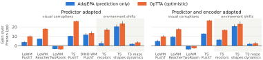

Adapt for Planning, Not Just Prediction Optimistic Test-Time World Model Adaptation
Texas A&M University
To appear at the Pretrain to Adapt workshop, CoRL 2026
TL;DRAdapted to prediction alone, a world model is fit only to the outcomes of its own actions and can remain wrong about the actions that would reach the goal. OpTTA estimates the model with a task-aware, optimistic objective: the prediction loss on observed transitions plus the planner's goal-reaching cost on its own candidate rollouts. Across three JEPA world models and 15 shifted settings, it raises final planning success over the frozen model by 13.5 points on average, against 6.9 for prediction-only adaptation.
Optimism improves planning under distribution shift

Both methods share the checkpoint, planner, episodes, buffer, adapted parameters and update schedule; only the adaptation objective differs. OpTTA reaches higher final success in 14 of 15 shifted settings and higher mean success over replans in 13 of 15. TwoRoom is the exception, where both objectives fall below the frozen model.
Full results table
| Setting (shifts) | Final | Mean over replans | ||||
|---|---|---|---|---|---|---|
| Frozen | AdaJEPA | OpTTA | Frozen | AdaJEPA | OpTTA | |
| In distribution | ||||||
| LeWM PushT | 80.0±2.5 | 88.8±1.4(+8.8) | 92.0±1.9(+12.0) | 59.1±1.1 | 66.7±1.3(+7.6) | 71.5±1.9(+12.4) |
| LeWM Reacher | 98.4±0.7 | 98.8±0.8(+0.4) | 100.0±0.0(+1.6) | 75.6±0.9 | 75.3±1.5(−0.3) | 77.6±0.6(+2.0) |
| LeWM TwoRoom | 93.6±1.3 | 93.2±1.2(−0.4) | 91.2±0.5(−2.4) | 80.7±0.8 | 79.7±1.0(−1.0) | 79.0±0.7(−1.7) |
| TS PushT | 68.4±2.3 | 81.6±2.5(+13.2) | 91.6±1.9(+23.2) | 49.4±1.2 | 55.9±1.1(+6.5) | 66.1±1.3(+16.7) |
| DINO-WM PushT | 76.7±3.5 | 77.3±5.2(+0.7) | 81.3±4.7(+4.7) | 58.9±2.2 | 59.7±5.0(+0.8) | 63.1±3.9(+4.2) |
| Visual corruptions | ||||||
| LeWM PushT (7) | 58.5±0.8 | 62.4±1.0(+3.9) | 68.5±0.6(+10.0) | 43.9±0.7 | 47.3±0.6(+3.5) | 52.9±0.5(+9.0) |
| LeWM Reacher (7) | 52.8±0.5 | 60.3±0.5(+7.5) | 70.8±0.7(+18.0) | 38.4±0.6 | 40.6±0.5(+2.2) | 47.2±0.8(+8.8) |
| LeWM TwoRoom (7) | 61.0±1.7 | 57.6±1.5(−3.4) | 57.2±1.5(−3.8) | 51.9±1.8 | 49.3±1.6(−2.6) | 49.3±1.5(−2.6) |
| TS PushT (7) | 47.8±1.5 | 58.3±1.2(+10.4) | 74.0±1.3(+26.1) | 34.0±1.3 | 38.2±1.1(+4.2) | 49.5±1.1(+15.6) |
| DINO-WM PushT (7) | 45.3±3.0 | 57.1±4.5(+11.8) | 58.8±3.2(+13.4) | 34.2±2.4 | 42.7±4.0(+8.5) | 44.8±2.5(+10.6) |
| Environment shifts (TS) | ||||||
| PushT recolors (3) | 38.1±1.7 | 40.8±1.6(+2.7) | 55.2±0.8(+17.1) | 27.4±1.1 | 26.9±0.6(−0.5) | 36.4±0.8(+9.0) |
| PushObj shapes (3) | 34.7±1.6 | 55.2±2.0(+20.5) | 58.3±1.9(+23.6) | 24.5±1.0 | 38.2±1.7(+13.7) | 43.0±1.3(+18.5) |
| Maze dynamics (2) | 85.6±1.7 | 87.6±2.0(+2.0) | 89.2±1.4(+3.6) | 66.5±1.1 | 68.2±1.3(+1.7) | 68.8±1.2(+2.3) |
| In distribution | ||||||
| LeWM PushT | 80.0±2.5 | 86.8±1.5(+6.8) | 90.4±1.7(+10.4) | 59.1±1.1 | 65.6±1.9(+6.5) | 70.7±2.0(+11.6) |
| LeWM Reacher | 98.4±0.7 | 99.2±0.5(+0.8) | 100.0±0.0(+1.6) | 75.6±0.9 | 74.7±1.2(−0.9) | 77.1±0.6(+1.5) |
| LeWM TwoRoom | 93.6±1.3 | 92.4±1.0(−1.2) | 91.6±0.7(−2.0) | 80.7±0.8 | 79.0±0.8(−1.7) | 79.7±0.8(−1.1) |
| TS PushT | 68.4±2.3 | 83.2±2.9(+14.8) | 90.8±1.6(+22.4) | 49.4±1.2 | 56.8±2.7(+7.4) | 67.2±0.8(+17.8) |
| Visual corruptions | ||||||
| LeWM PushT (7) | 58.5±0.8 | 63.5±0.8(+5.0) | 68.4±1.0(+9.9) | 43.9±0.7 | 47.9±0.7(+4.1) | 53.0±0.8(+9.2) |
| LeWM Reacher (7) | 52.8±0.5 | 62.3±1.1(+9.5) | 70.5±1.0(+17.7) | 38.4±0.6 | 41.7±0.7(+3.2) | 47.1±0.7(+8.7) |
| LeWM TwoRoom (7) | 61.0±1.7 | 57.1±1.2(−3.8) | 58.4±1.4(−2.6) | 51.9±1.8 | 49.0±1.6(−2.9) | 50.1±1.5(−1.8) |
| TS PushT (7) | 47.8±1.5 | 60.7±1.9(+12.9) | 74.7±1.5(+26.9) | 34.0±1.3 | 39.6±1.4(+5.6) | 50.8±1.2(+16.8) |
| Environment shifts (TS) | ||||||
| PushT recolors (3) | 38.1±1.7 | 44.5±1.3(+6.4) | 54.9±1.7(+16.8) | 27.4±1.1 | 29.7±1.0(+2.3) | 36.9±1.5(+9.5) |
| PushObj shapes (3) | 34.7±1.6 | 55.5±1.1(+20.8) | 57.9±2.0(+23.2) | 24.5±1.0 | 38.1±1.3(+13.6) | 42.5±1.7(+18.0) |
| Maze dynamics (2) | 85.6±1.7 | 87.6±1.7(+2.0) | 88.2±1.7(+2.6) | 66.5±1.1 | 68.0±1.2(+1.5) | 67.7±1.1(+1.2) |
Success rate in percent, mean ± standard error over seeds. Final is the success rate after the last of 30 replanning steps; Mean over replans averages cumulative success over all 30 steps, so it rewards solving tasks early. Parentheses give the gain over the frozen model. Visual-corruption rows average four severity levels (DINO-WM: one level, three seeds). TS is temporal straightening.
Which objective should guide test-time adaptation for planning?
Latent world models are pre-trained offline and kept frozen at test time, so planning with them degrades under distribution shift. Test-time adaptation updates the model during deployment, in a closed loop: the planner acts on the model's rollouts, and the resulting transitions drive the next update. Under a prediction-only objective the model is fit only to the outcomes of its own actions, so it can remain wrong about the actions that would reach the goal, and low prediction error need not translate into better planning.
Optimistic test-time adaptation
OpTTA formulates test-time adaptation as task-aware, optimistic model estimation, inspired by reward-biased maximum likelihood from adaptive control. Optimism enters through the estimation objective itself, without confidence sets or explicit uncertainty estimates, and the objective assumes no particular world-model architecture or planner.
- Prediction termLatent prediction loss on the buffer \(\mathcal{B}\) of recent observed transitions; it keeps the model estimate grounded in what was observed. \(\alpha_k=0\) is prediction-only adaptation (AdaJEPA).
- Planning termAverage goal-reaching cost of the planner's candidate rollouts \(\mathcal{P}_\theta\), differentiated with respect to the model parameters with the actions held fixed. It favors models under which those rollouts reach the goal, with no additional environment interaction.
- Optimism weightSet by gradient balancing with a ramp that limits optimism early and increases it over replanning steps. \(\rho=1\) in every experiment.
\(\displaystyle \alpha_k=\rho\sqrt{k/K_{\max}}\;\frac{\|\nabla\mathcal{L}_{\mathrm{pred}}\|}{\|\nabla\mathcal{L}_{\mathrm{plan}}\|+\varepsilon}\)
How optimism changes adaptation
The advantage does not come from fitting the agent's own experience better: OpTTA's prediction loss on the transitions it executes is not consistently lower. Its model is more accurate on the goal-reaching trajectory on Reacher and more optimistic about its chosen plan on both tasks. Planning with an optimistic model either reaches the goal or produces transitions that the prediction loss then uses to correct the model.
Conclusion
Across three JEPA world models, both adaptation scopes, visual and environment shifts, and CEM and gradient-based planners, OpTTA improves final success over prediction-only adaptation in most settings. World-model adaptation should account for the downstream planning objective rather than prediction alone, and optimism offers a simple way to do so. Limitations: on TwoRoom neither objective improves over the pretrained model, and OpTTA adds computation per replan.
BibTeX
@article{mete2026optta,
title = {Adapt for Planning, Not Just Prediction: Optimistic Test-Time World Model Adaptation},
author = {Mete, Akshay and Kalathil, Dileep and Kumar, P. R.},
journal = {arXiv preprint arXiv:2610.35636},
year = {2026}
}